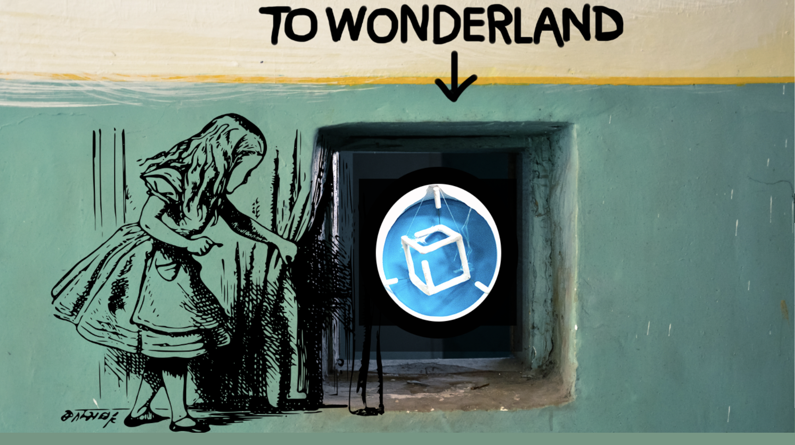
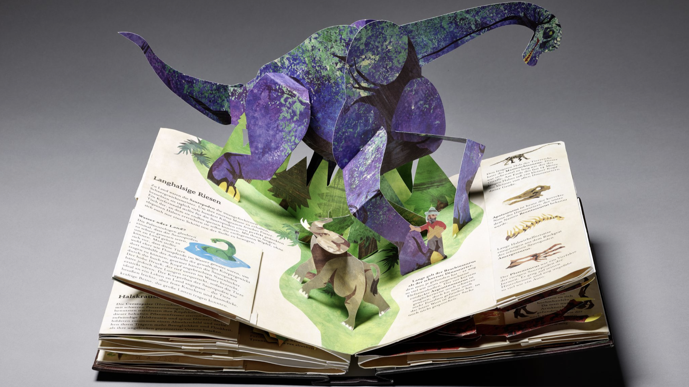
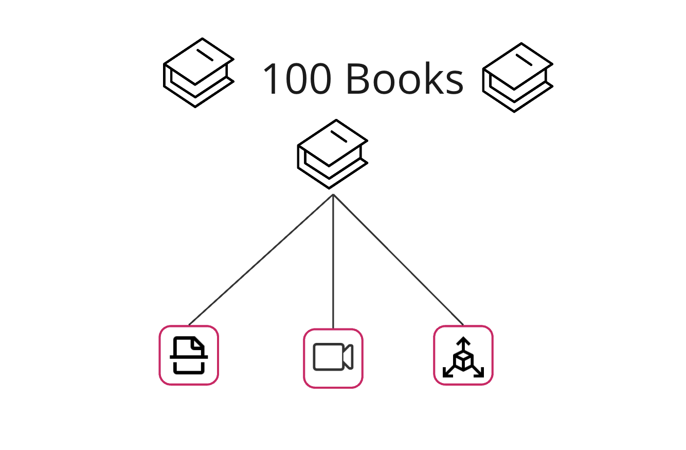

Prozessmanagement
Pop-up 3D Projekt
Zoe Schubert
Herbst 2024 | Staatsbibliothek Berlin, Generaldirektion
Themen
Das Projekt

Management
Workflows

Ausgangsfrage
wie kann der Spielbuchbestand der Stabi (auch für Forschende) zugänglicher werden?
Vorarbeiten
- Vorgänger Projekt
- Workshop mit Expert:innen
- Mögliche Technologien
- Transformation bei der Digitalisierung
- Auswahl der Bücher
Forschung
Transformation und neue Features (z.B. Zitation)
Digitalisate
Scan, Video &
(interaktives) 3D Modell
Ziel: 100 Bücher mit jeweils 3 Digitalisaten

Auswahl: Die Kategorien der 100 Bücher
Weitere Eigenschaften der Bücher, die sich direkt auf die Digitalisierung auswirken
Projektmitarbeitende
- Casilda de Zulueta: 3D Modelling & Animation
- Fenya Troch: 3D Modelling & Animation
- Natalia Sucharek: Video, Photogrammetry
- Zoe Schubert: Project Coordination
Support & Mitarbeit
- Initiator: Christian Mathieu
- Kinderbuchabteilung
- Digitalisierungsabteilung
- Restaurierung
- IT der Stabi
- Exklusiver Support
Ziel: 100 Bücher mit jeweils 3 Digitalisaten
Let's get started
- Beschaffung von Materialien und Arbeitsgeräten
- Workflow Abstimmung
- Bücher Sichtung
Tools: Management & Verantwortlichkeiten
NOCODB, Forum, Speicherstruktur, HedgeDoc